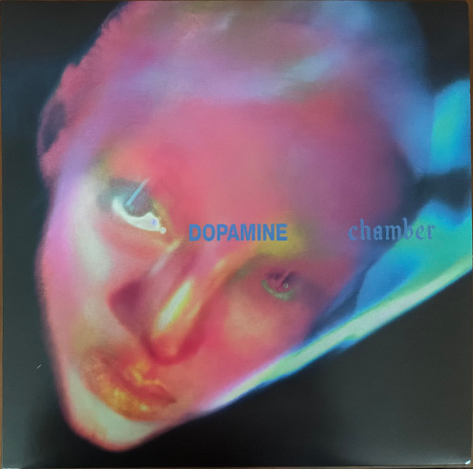
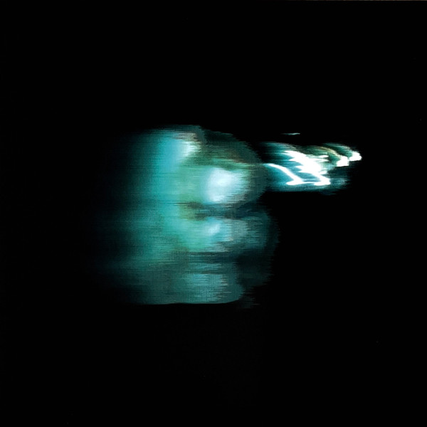
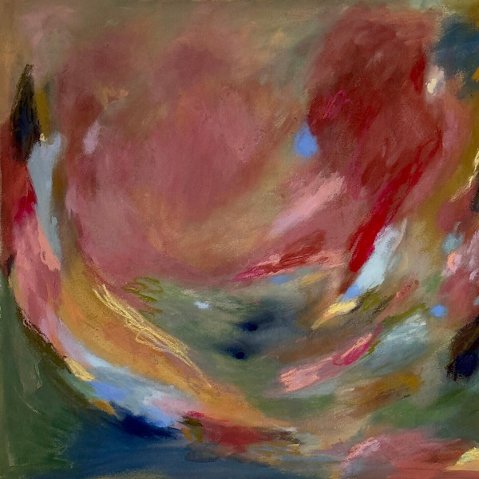
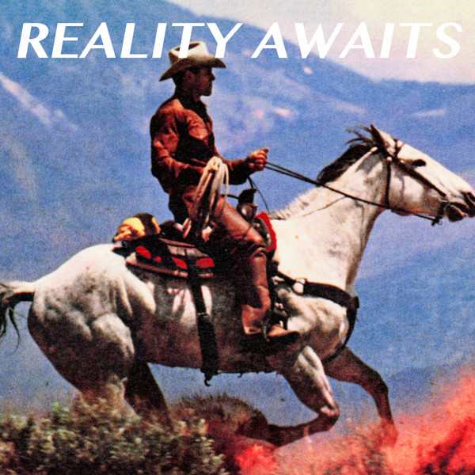

Reviews
Check out what I've been listening to! See what my recent listens are, what I think of new albums, and what albums I plan on listening to next!

"Dopamine Chamber" - Fontaines D.C.
I love when the Irish go punk-rock
"Dopamine Chamber" was my first full Fontaines D.C. listen, front to back. I like a lot of their songs from across their works, but this is the first album of their's I've listened to in full so far. From my understanding, there was a lot of anticipation surrounding it's release, and for good reason! I had a lot of fun listening to this album. They take some fun directions musically that doesn't make the project sound too repetative. Although the band is known for a lot of their harder-hitting songs, I found some of my favorites on the project to be the softer songs. Overall, I really enjoyed the listen. I am excited to hear more from the band in the future! My favorites on the album were "One Man", "Where is Gone?", and "Japan".

"Lost Weekend" - Phoebe Bridgers
Sad girl renessiance is here
From when it was annouced, this was one of my most ancipated albums of the year. I've been listening to Phoebe Bridgers for about 7 years now and I love her music! Being 6 years since her last solo album, I was very interested to see where she was going to go next. The sound of this album really stood out to me from the rest of her discography. The use of vocoder throughout the album took some getting used to. The album as a whole, as well, took me a couple listens to fully wrap my head around. Overall, I really liked the album! Phoebe Bridger's songwriting is one of my favorite elements of her music and she has only gotten more abstract, and complex in all the best ways! My favorites on the album were "The Governor's Waltz", "Bobby", "Lost Weekend", and "Haunted".

"Angel" - Lizzy McAlpine
Like a warm hug from someone that just punched you in the face
Lizzy McAlpine's last album, "Older", was one of my favorites of 2024 and really made me a fan of her work. I was very excited to hear this new album. The album still has her recognizable "sound", but surprised me in many ways too! This album definitely took a couple listens to figure out, and even still, I'm trying to figure out my opinions on it. Overall, I think I like "Older" as a collective more, but there are some really great songs throughout the album that I've come back to alot. My favorites on the album were "The moon", "Over Country", and "Angel".

"Reality Awaits" - The Strokes
The strokes are back!
It's been 6 years since The Strokes put out there last album, "The New Abnormal", and it became one of my favorite albums quick! This was a highly anticiapted album for me. I have heard a lot of negative-leaning reviews of the album, but I don't think it deserves the hate I've seen it get! It doesn't rank as one of the band's best albums, but there's a lot to enjoy! The use of autotune throughout the album can take some getting used to and, even then, it isn't for everyone but it has grown on me more and more! Overall, I think I'm in the minority when I say I liked this album. Defintely not their best, and the 6 year wait may make it feel underwhelimg, but there are some really great songs on it that deserve more recognition than they are getting. My favorite tracks were "Dine N'Dash", "Falling out of Love", "Going to Babble On", and "The Fruits of Conquest".